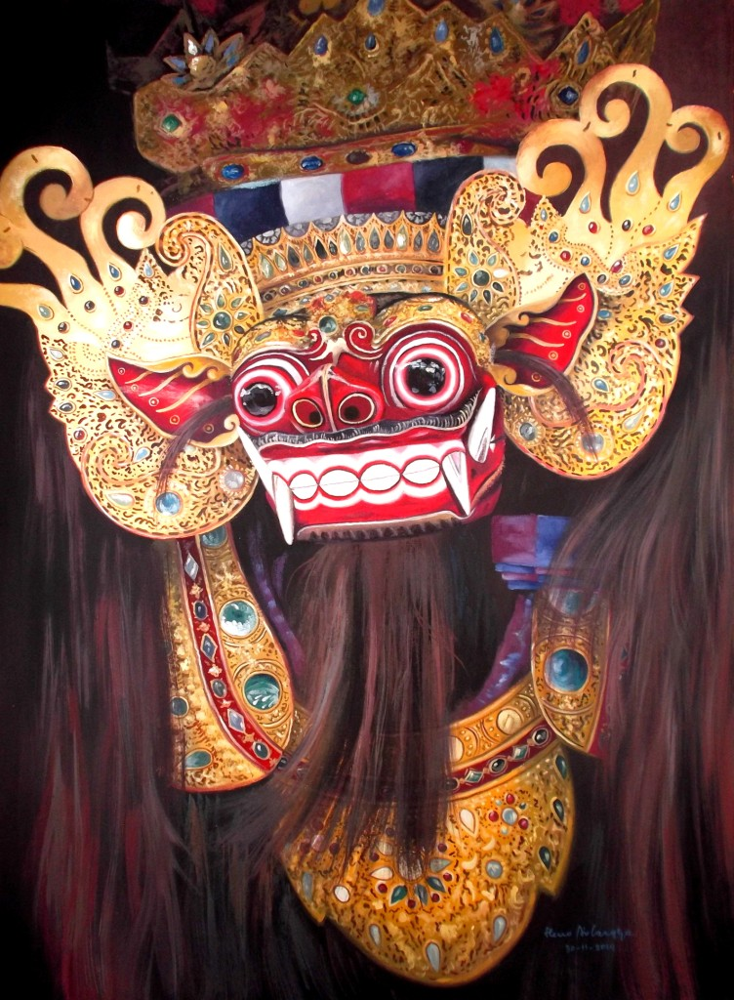
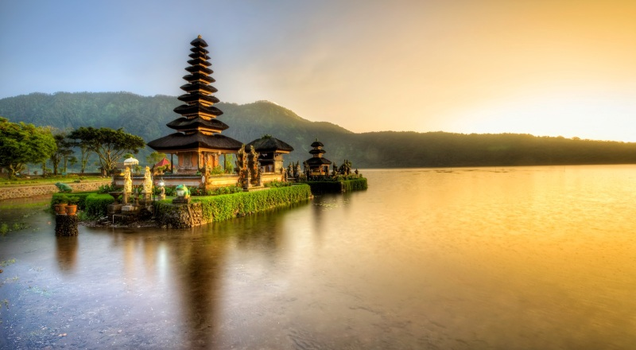
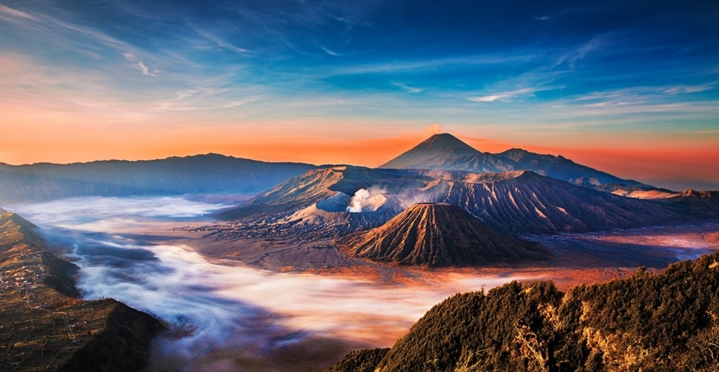

Budaya

Budaya adalah suatu cara hidup yang berkembang, dan dimiliki bersama oleh sebuah kelompok orang, dan diwariskan dari generasi ke generasi. Budaya terbentuk dari banyak unsur yang rumit, termasuk sistem agama dan politik, adat istiadat, bahasa, perkakas, pakaian, bangunan, dan karya seni.
Kuliner

Salah satu kebudayaan yang dimiliki Indonesia adalah kuliner tradisional.Masing masing kota memiliki kuliner tradisional yang berbeda. Perbedaan perbedaan kuliner tradisional Indonesia itu juga masing masing mempunyai ciri khas. Seperti Jawa Tengah yang dikenal dengan rasa manis nya, atau Menado yang dikenal dengan masyarakat yang paling suka dengan rasa pedas,dan lain sebagainya.
Alam

Pantai Bali Yang Bagus & Indah Favorit Wisatawan Indonesia Saat Liburan – Sebagai tempat wisata, daya tarik utama pulau Bali terletak pada panorma alam. Baik panorama alam pegunungan, pemandangan alam perbukitan dan sawah terasering. Serta panorama alam pantai Bali. Pantai di Bali jumlahnya sangat banyak. Ada pantai yang memiliki pantai pasir putih atau pantai yang pasirnya berwarna hitam. Namun untuk objek wisata, pantai yang memiliki pasir putih lebih banyak dikunjungi wisatawan di Bali.

Bromo - Gunung Terpopuler Di Jawa Timur –Gunung Bromo, siapa yang tidak mengenal kepopuleran gunung berapi yang masih aktif ini. Gunung Bromo adalah gunung yang paling terkenal di Jawa Timur dengan kunjungan yang paling ramai setiap tahunnya.Gunung Bromo memiliki ketinggian 2.392 Meter dari atas permukaan laut dan berada dalam empat lingkup kabupaten, yaitu Probolinggo, Pasuruan, Lumajang dan Kabupaten Malang. Keadaan alam gunung Bromo bertautan pula dengan lembah, ngarai, caldera atau lautan pasir dengan luas sekitar 10 Km.!